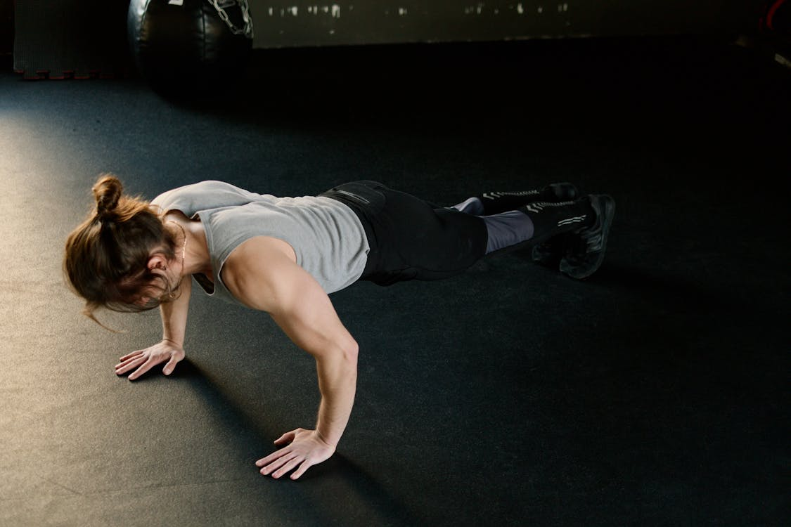

8 Week Strength Building Workout for Beginners
Workout Description
This eight-week program is designed to help you get stronger throughout the entire body. Yes, the big three power lifts are involved, but this isn’t necessarily a powerlifting program. The goal will be to lift more weight with all the major body parts. You’re going to train five days a week, but none of these workouts will be that long. You should be in and out of the gym or weight room in less than an hour. We’re going to keep this to barbells and dumbbells as much as possible, but you can also expect some machine work. If you don’t have cables or machines, do the best you can with what you do have.
Good news: we have a plan that will help you stretch sleeves, build mass, and bump up that number on the scale.If you can commit eight weeks to this as if your future depends on it, then you can kickstart your journey to getting swole.
The Workouts
The goal is to train five days in a row with two days off. If you need to take a day off in between because of your school or work schedule, that is ok. Just make sure you take two complete days off from weight training a week. Light to moderate cardio is ok, but you shouldn’t push it. The lifts you max out on are the opening lifts of each workout. Once you warm up, you will perform five working sets with the same weight. The weight you use will be a percentage of your max. That percentage will change each week. The chart below will show you what weights to use each week. This applies to all five opening lifts – squat, bench press, deadlift, standing barbell press, and bent-over barbell row. Rest for three minutes between each set of the opening lifts and two minutes between all other sets.
8 Week Strength Building Workout for Beginners
Workout 1 - Chest/Shoulder
| Exercise | Sets | Reps |
|---|---|---|
| Bench Press | 3 | 12,10,8,6 |
| incline Bench Press | 3 | 12,10,8,6 |
| Dumbbell Fly | 3 | 12,10,8,6 |
| Tricep Dips | 3 | 12,10,8,6 |
Workout 2 - Back
| Exercise | Sets | Reps |
|---|---|---|
| Deadlift | 4 | 12,10,8,6 |
| Lying Leg Curl | 4 | 12,10,8,6 |
| Walking Lunge | 4 | 12,10,8,6 |
Workout 3 - Legs
| Exercise | Sets | Reps |
|---|---|---|
| Barbell squat | 4 | 12,10,8,6 |
| Hack Squat | 4 | 12,10,8,6 |
| Leg Press | 4 | 12,10,8,6 |
| Dumbbell Lunges | 4 | 12,10,8,6 |
| Lying Leg Curl | 4 | 12,10,8,6 |
Workout 4 - Arms
| Exercise | Sets | Reps |
|---|---|---|
| Close Grip Bench Press | 4 | 12,10,8,6 |
| Overhead Tricep Extension | 4 | 12,10,8,6 |
| Straight Bar Tricep Extension | 4 | 12,10,8,6 |
| Cable Curl | 4 | 12,10,8,6 |
| Seated Barbell Wrist Curl | 4 | 12,10,8,6 |

Recovery
Any and all forms of recovery could help you maximize your potential. Massages, foam rolling, stretching, and percussive gun treatments would all serve you well. The most important one of all is sleep. If you’re not sleeping enough, you aren’t going to see the best results.
What to Do After This Program
After you max out again on the eighth week, you can either give it a second run or move on to another program based on your new goals. That is up to you. If you take this for the full run, we would love to see how you do. Share your results in our comments section so we can encourage each oth